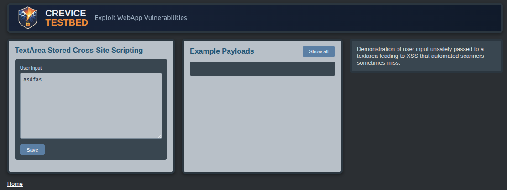
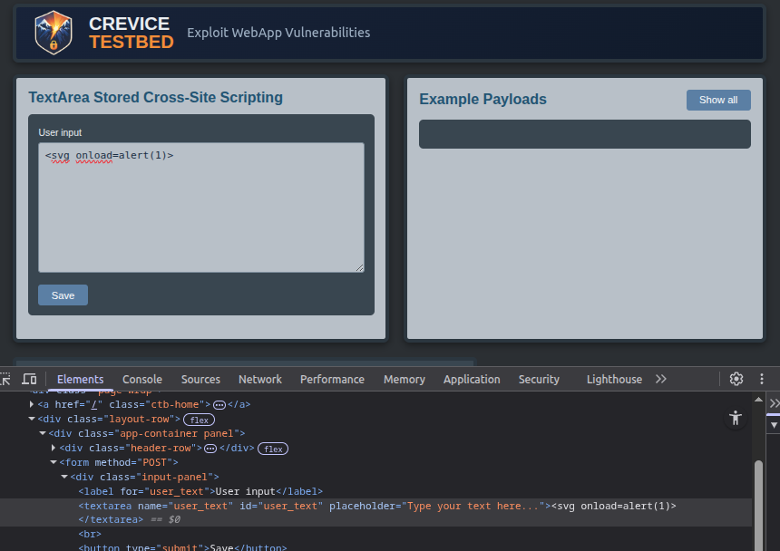
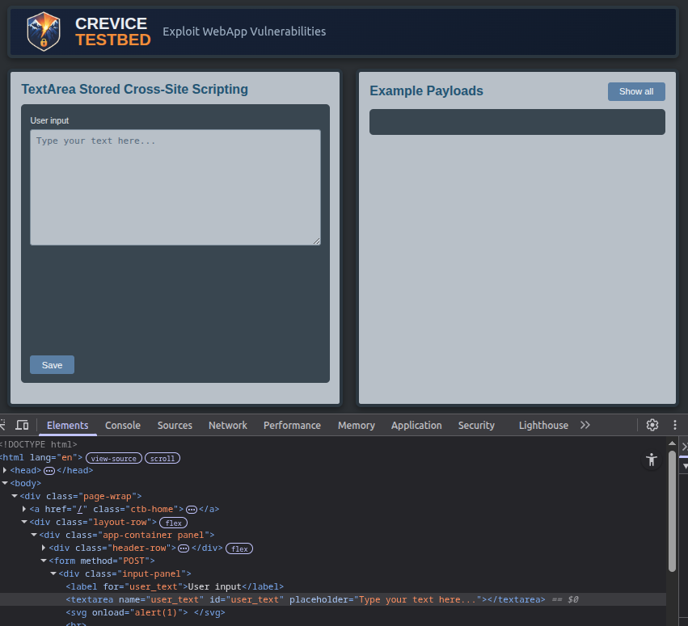

Cross-Site ScriptingEscaping a <textarea> Context

Summary
This CreviceTestbed lab demonstrates a Cross-Site Scripting scenario where user input is reflected inside a
<textarea> element. Because browsers treat content inside a textarea as plain
text, injected HTML and JavaScript don't execute even when they appear to be reflected correctly.
The objective is to identify why a typical XSS payload fails and modify it so that it escapes the textarea context and executes successfully. This lab reinforces the importance of understanding how HTML context affects exploitability.
Lab Objectives
- Identify why a reflected XSS payload does not execute
- Use browser developer tools to inspect rendered HTML
- Understand how the
<textarea>element affects execution - Modify a payload to escape the textarea context
Technical Walkthrough
Submitting a basic XSS payload such as
<svg onload=alert(1)>
results in the payload being reflected in the response but not executed.
Inspecting the page using browser developer tools reveals that the input is placed inside a
<textarea> element. In this context, HTML tags are treated as literal text and
are not interpreted by the browser, explaining why the injected tag doesn't execute.

To achieve execution, the payload must first escape the textarea element. This can be done by
injecting a closing </textarea> tag before introducing executable content.
A working payload might look like </textarea><svg onload=alert(1)>
When this payload is reflected, the textarea is closed and the injected svg element is interpreted as part of the page, resulting in JavaScript execution.

Key Takeaways
- Reflected input is not always immediately exploitable
- HTML context determines whether injected code executes
- Developer tools are essential for understanding how input is rendered
- Small payload modifications can change a non-exploitable case into a working exploit
Common Pitfall
It is common to dismiss reflections inside textarea elements because initial payloads don't execute. Automated tools may also fail to generate working payloads in this context.
This lab highlights the importance of manually inspecting how input is embedded in the page and adjusting payloads based on the surrounding HTML structure.